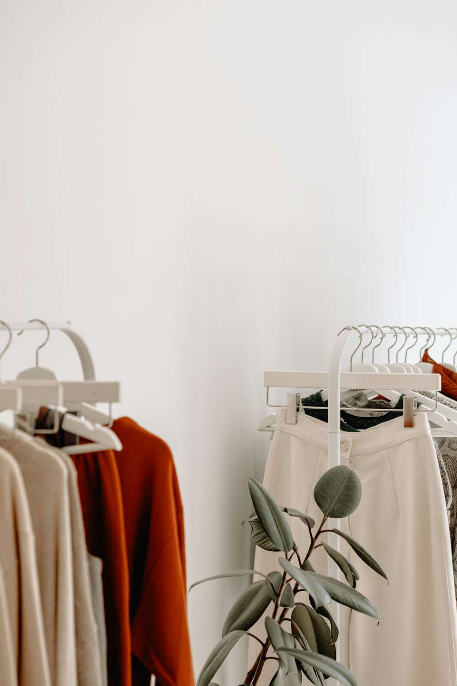

Issue N°14 · Notes on craftGuides4 min read
Five pieces, fifteen outfits.
How to build a small autumn wardrobe that actually works together.

Most wardrobes are too big and still feel empty. The fix is not more clothes. It is fewer pieces that all go with each other. Choose five, keep to one narrow palette, and you will have fifteen outfits before you have to think about it.
Start with the palette
Pick colours that sit well together and stay inside them. Ours are rust, cream, white, sage and olive. None of them fights another, so any piece can go with any other.
The blue jeans and white shirt you already own will slot in too. A narrow palette is not a uniform. It is a head start.
Rust warms the cream. Sage cools the rust. Olive sits quietly under all of it.
The five pieces
One jacket: the Harbor Jacket in rust, a light bomber with a brass zip. One knit: the Rib Knit in cream, soft and slightly cropped. One tee: the Everyday Tee in white, heavy enough to wear alone. One pair of trousers: the Easy Trousers in sage, cut just above the ankle. One pair of boots: the Desert Boot in olive suede.

The jacket is light and water-resistant, so it works as a coat in October and a layer in December. The knit is warm without the weight. The boots are unlined and soft from the first wear.
Each piece does a different job. Each colour is quiet enough to sit beside the rest. Nothing needs to be saved for best.
Buy fewer things, and make sure each one goes with all the others.
How to ring the changes
With one pair of trousers and one pair of boots, the changes come from how you wear them. Push the sleeves up. Tuck the tee in. Zip the jacket to the neck. Swap in blue jeans, trainers, a belt or a scarf for the day.
The grid below shows fifteen ways to begin. Start there, then make your own.
The outfit grid
Five ways to wear, three kinds of day. Fifteen outfits.